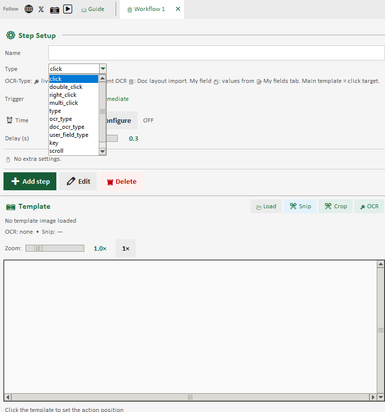
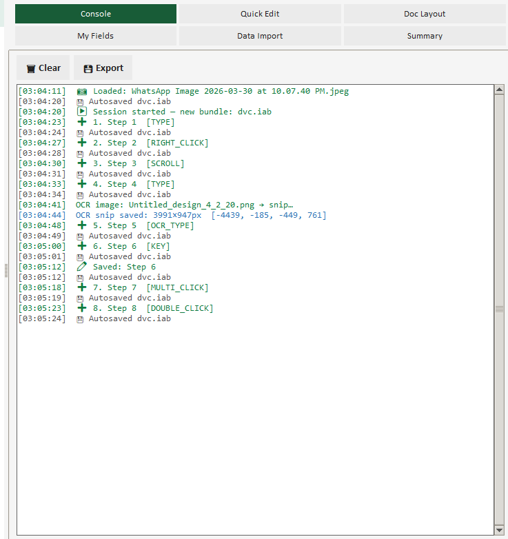
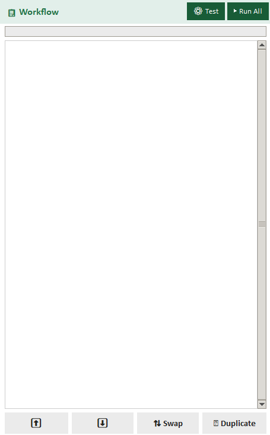
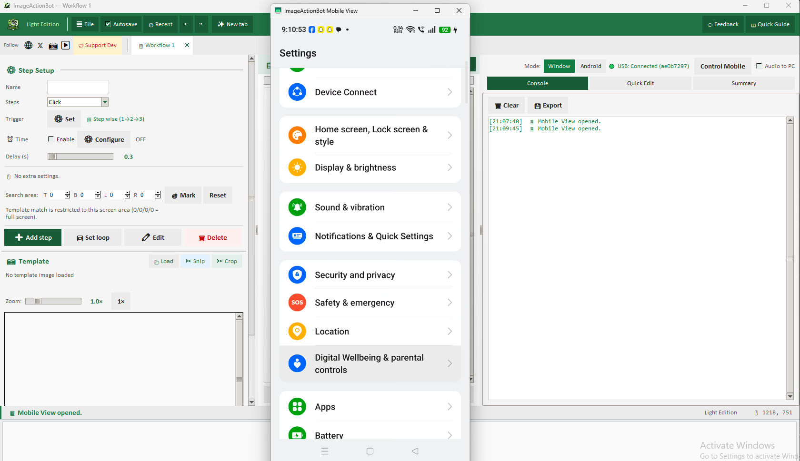

1. Snap the part you care about
Save a small screenshot of a button, menu, text box, or icon — the same thing your eyes already use to work. ImageActionBot matches that image when your apps are open.
No coding · Point at the screen · Free Windows automation
If you can see a button, field, or icon on your screen, you can automate it. ImageActionBot is built so you never write scripts: load a template image, choose click, type, key, or scroll, and line up steps like a checklist. Your work stays on your PC, with a clear app window, Run All / Test, and an Emergency stop (Esc) while a run is active — the same kind of control we expect from serious desktop tools.
No credit card · No programming · Local-first workflows · Installer ImageActionBot_Setup.exe
You do not type commands or learn a language. You show the app what to look for (a picture from your screen) and what to do when it finds it. That is the whole idea.
Save a small screenshot of a button, menu, text box, or icon — the same thing your eyes already use to work. ImageActionBot matches that image when your apps are open.
Click, double-click, type text, key actions, wait, or pull rows from a spreadsheet. Everything is chosen from the step panel — no code files, no scripts.
Steps run in order, like a recipe. Use Run All for the full flow or Test to try selected steps. While it runs, a compact panel shows progress; press Esc for an emergency stop.
Export your flow as an .iab bundle for backup or to run the same process on another PC. Your data stays under your control unless you choose to share.
ImageActionBot is built for people who want dependable desktop automation with an honest, transparent product: free download, privacy-forward design, and documentation you can verify yourself.
Real screens from the Windows desktop app: configuring steps, viewing output, and managing workflows.




You stay in the visual world — pictures and menus. Behind that, ImageActionBot uses template matching to find those same pixels on live windows or Android device screens so actions land where you expect.
How it works: You capture a screenshot of any image (button, icon, logo). ImageActionBot scans your screen using advanced template matching algorithms, finds the exact or similar image, and returns its coordinates.
Automatically click when image is found. Left click, right click, double click, hover. Offset click support - click relative to image position (top-left, center, bottom-right, custom coordinates).
Run mobile automation by matching visual anchors and sending tap/swipe/key actions through Android mode.
Detect element using image matching, then automatically type into that element. Variable data, special keys (Enter, Tab), clipboard paste support.
Import data from CSV/XLSX files. Detect form fields using image matching, then auto fill automatically. Bulk form filling for thousands of records.
Combine multiple image matching steps. Find Image A -> click -> Find Image B -> type value -> Find Image C -> auto fill. Conditional logic, loops, wait conditions all supported.
A practical Windows desktop app with an English UI, Excel-style light theme, and production-friendly controls for free automation workflows.
Create and run multiple workflows in parallel tabs. Separate project contexts reduce setup mistakes and speed up daily operations.
Track running steps in real time with on-screen progress, status updates, and quick controls for run, stop, and reset.
Export workflows as bundle files and import them on another system. Useful for backup, team handover, and repeatable delivery.
Switch between desktop and Android automation in the same workflow tab with consistent run controls and status feedback.
Map spreadsheet headers to step names for bulk field entry. Built for repetitive data operations and scalable document processing jobs.
Save and load IAB workflow bundles to deploy repeatable automation across teams and machines quickly.
Think “show and tell” for your computer: you show what to find; ImageActionBot tells the mouse and keyboard what to do.
Take a screenshot of any image on your screen — buttons, icons, logos, UI elements, text boxes, checkboxes, radio buttons. Any visible element can be used for image matching.
ImageActionBot scans your screen and searches for the template image. Advanced algorithms compare pixel patterns, detect size variations, and find the best match. Adjust confidence threshold — 100% means exact match, lower values for partial matches.
After image is found, you can automate any action:
Combine multiple image matching steps to create complex workflows. A single workflow can have 50+ steps with loops, conditions, and variables. Each step can have different image matching targets and automation actions.
We want you to feel confident before and after you click Download — not surprised in the fine print.
Image matching automation uses template matching technology to find a specific image on your screen. You capture a screenshot of any button, icon, or UI element. ImageActionBot scans your screen, finds that image using advanced algorithms, and then performs automated actions like clicking, typing, or reading text from that location.
Yes. This is the core feature. Using advanced image matching technology, ImageActionBot finds any image on your screen—buttons, icons, logos, or UI elements—and automatically clicks on it. Works with partial matches, adjustable confidence thresholds, and offset clicking for precise control.
Yes. ImageActionBot uses advanced template matching algorithms for image recognition. It compares the template image you provide with your screen content, finds the best match, and executes automation actions. You can adjust confidence thresholds for precise or flexible matching.
Yes. ImageActionBot allows complete automation workflows. Use image matching to find and click target UI, then auto fill values from workflow variables or CSV/XLSX rows in the same run.
After image matching finds an image, you can automate: left click, right click, double click, mouse hover, typing text, key actions, copying to clipboard, waiting for element, conditional branching, and complete workflow execution with data from CSV/XLSX files.
Free to download and use. Windows 10 and Windows 11 recommended. Works on common screen resolutions with scaling support.
No. ImageActionBot uses a visual workflow builder. You can create automation workflows without any coding. Capture images, set actions, map data fields — everything is visual and easy to use.
An IAB file is a workflow bundle package for export/import of complete automation flows. It is useful for team handover, reusable deployment, and workflow backup. See the detailed guide in IAB workflow bundle section.
Export only tested workflows, import on the target system, then validate image anchors, and CSV/XLSX mappings before production. Run a dry test first, especially if resolution, scaling, or UI layout differs across machines.
If your team is evaluating desktop automation software, Android automation software, or image-based automation tools, review our dedicated page: Automation Software Guide. It covers buying intent topics such as feature fit, practical workflows, and implementation readiness.
Official Social Channels & Updates